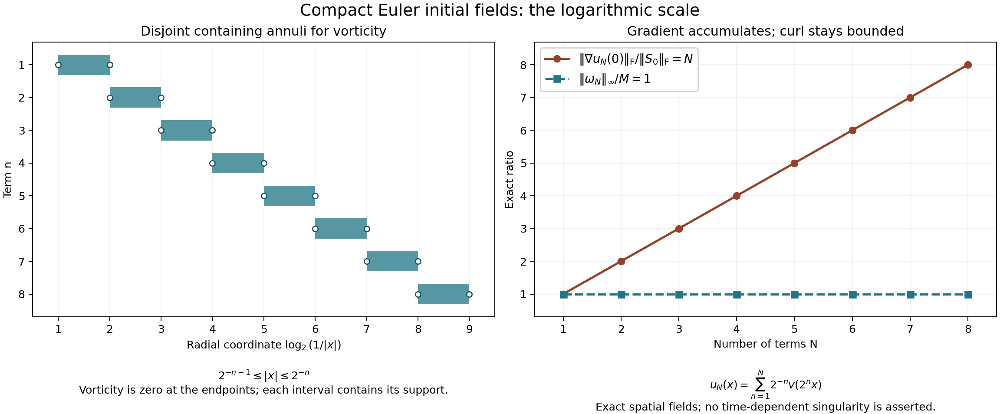

Euler solutions and vorticity continuation
The viscous equation gains spatial derivatives from its heat operator. The Euler equation has no such term. Its local construction instead depends on an energy cancellation: the highest derivative is transported by a divergence-free velocity and contributes no change to the energy. We will prove the estimate that makes this cancellation usable, construct the solution, and prove the Beale–Kato–Majda continuation criterion with the original force retained.
The logarithm in that criterion has a specific source. Each intermediate frequency band of the velocity gradient is controlled by the vorticity. The number of bands needed is logarithmic in the higher Sobolev norm. Exercise 5 constructs smooth compact fields that show why dependence on that higher norm cannot simply be removed.
1. Original data, equation and full norms
Let \(\Omega=\mathbb R^3\) or
\[ Q=\prod_{j=1}^3(\mathbb R/L_j\mathbb Z),\qquad L_j>0,\qquad V=L_1L_2L_3. \tag{1.1} \]We use ordinary Lebesgue measure. Fix any real \(s>5/2\), and prescribe
\[ \begin{gathered} u^0\in H^s_\sigma(\Omega),\qquad f\in L^1_{\rm loc}([0,T_f);H^s(\Omega)),\\ u_t+(u\cdot\nabla)u+\nabla p=f,\qquad \operatorname{div}u=0,\qquad u(0)=u^0. \end{gathered} \tag{1.2} \]The subscript \(\sigma\) means zero distributional divergence. The force itself need not be divergence-free. The pressure and its force component will be reconstructed, together with the original periodic mean.
Our Fourier transform has kernel \(e^{-2\pi i x\cdot\xi}\). Set
\[ w(\xi)=(1+4\pi^2|\xi|^2)^{1/2},\qquad a_r(\xi)=w(\xi)^r,\qquad J^r=a_r(D). \tag{1.3} \]Here \(m(D)\) denotes the Fourier multiplier with symbol \(m\), so it does not add an unmentioned derivative convention. The full norm is
\[ \|h\|_{H^r}^2=\int_{\mathbb R^3}a_r(\xi)^2|\widehat h(\xi)|^2\,d\xi. \tag{1.4} \]On the box, \(\kappa_k=(k_j/L_j)_j\), \(h_k=V^{-1}\int_Qh(x)e^{-2\pi i\kappa_k\cdot x}\,dx\), and the norm is \(V\sum_k a_r(\kappa_k)^2|h_k|^2\). Vector and tensor norms use all components with their Euclidean or Frobenius norm.
We will prove that (1.2) has a unique maximal solution
\[ u\in C([0,T_*);H^s_\sigma),\qquad u_t\in L^1_{\rm loc}([0,T_*);H^{s-1}),\qquad T_*\leq T_f. \tag{1.5} \]It depends continuously on the data in \(H^s\) and on the force in \(L^1H^s\), on every compact interval of the reference solution. A finite \(T_*<T_f\) requires both
\[ \sup_{t<T_*}\|u(t)\|_{H^s}=\infty, \qquad \int_0^{T_*}\|\nabla\times u(t)\|_\infty\,dt=\infty. \tag{1.6} \]More precisely, finiteness of the second integral before an endpoint inside the prescribed force interval gives an extension across that endpoint. The proofs below establish the solution map and every estimate used in this assertion.
2. Fourier blocks and elementary kernel bounds
We need a smooth cutoff with fixed, reproducible constants. Define
\[ \begin{gathered} b(t)=\begin{cases}e^{-1/t},&t>0,\\0,&t\leq0,\end{cases} \qquad \chi(t)=\frac{b(1-t)}{b(1-t)+b(t-1/4)},\\ c(\xi)=\chi(|\xi|^2/4),\qquad \psi(\xi)=c(\xi)-c(2\xi),\\ d_0=c,\qquad d_k(\xi)=\psi(2^{-k}\xi)\ (k\geq1), \qquad \Delta_k=d_k(D). \end{gathered} \tag{2.1} \]The denominator defining \(\chi\) is always positive. Every one-sided derivative of \(b\) at zero vanishes because it is a polynomial in \(1/t\) times \(e^{-1/t}\). Thus \(\chi\) is smooth. Its numerator decreases and the other denominator summand increases, so quotient differentiation gives \(\chi'\leq0\). It equals one for \(t\leq1/4\) and zero for \(t\geq1\). Consequently \(c=1\) for \(|\xi|\leq1\), \(c=0\) for \(|\xi|\geq2\), and \(\psi\geq0\) is supported in \(1/2\leq|\xi|\leq2\).
The exact telescoping identity is
\[ \sum_{k=0}^N d_k(\xi)=c(2^{-N}\xi),\qquad \sum_{k\geq0}d_k(\xi)=1. \tag{2.2} \]At most four summands are nonzero at any frequency, including zero. Therefore, with \(D(\xi)=\sum_kd_k(\xi)^2\),
\[ \begin{gathered} \frac14\leq D(\xi)\leq1,\\ \|h\|_{H^r}^2= \sum_k\int a_r(\xi)^2\frac{d_k(\xi)^2}{D(\xi)} |\widehat h(\xi)|^2\,d\xi,\\ \sum_k\|J^r\Delta_kh\|_2^2\leq\|h\|_{H^r}^2, \qquad \|h\|_2\leq2\left(\sum_k\|\Delta_kh\|_2^2\right)^{1/2}. \end{gathered} \tag{2.3} \]The first inequality follows from Cauchy–Schwarz applied to (2.2); the upper bound uses nonnegativity. On \(Q\) each integral is the original \(V\)-weighted sum. In particular (2.3) retains the complete inhomogeneous norm rather than replacing it with a derivative seminorm.
For a smooth compactly supported multiplier \(m\) define
\[ \begin{aligned} \mathcal K_1(m)&=\pi^2 \left\|\left(1-\frac{\Delta_\xi}{4\pi^2}\right)^2m\right\|_1,\\ \mathcal K_2(m)&=\pi^4 \left\|\left(1-\frac{\Delta_\eta}{4\pi^2}\right)^2 \left(1-\frac{\Delta_\zeta}{4\pi^2}\right)^2m \right\|_1. \end{aligned} \tag{2.4} \]The second formula is for a multiplier of two three-dimensional variables. Fourier integration by parts gives
\[ \|\mathcal F^{-1}m\|_1\leq\mathcal K_1(m),\qquad \|\mathcal F^{-1}_{\eta,\zeta}m\|_1\leq\mathcal K_2(m). \tag{2.5} \]Indeed \((1+|x|^2)^2\mathcal F^{-1}m\) is the inverse transform of the differentiated multiplier in (2.4), hence is bounded by its \(L^1\) norm. The radial integral \(4\pi\int_0^\infty r^2(1+r^2)^{-2}\,dr=\pi^2\) proves the first assertion; applying it in both variables proves the second. Higher powers of the same operator prove finiteness of every required kernel moment.
If \(K\) is the second inverse transform, its bilinear operator is \(\int K(y,z)F(x-y)G(x-z)\,dy\,dz\). Minkowski and the product bound in \(L^2\) show its norm from \(L^\infty\times L^2\) to \(L^2\) is at most \(\|K\|_1\); the input roles may be reversed. On \(Q\), periodize each kernel over \((n_jL_j)_j\). Its norm on the box is at most the original \(L^1\) norm by tiling. Its Fourier coefficient is \(1/V\) times the original multiplier, while each convolution with physical measure contributes \(V\). Thus all of these bounds hold on the original box with exactly the same constants.
Here are the constants needed later. Let
\[ C_c=\max(\|\mathcal F^{-1}c\|_1,\|\mathcal F^{-1}\psi\|_1), \qquad A_{r,e}(z)=(e^2+4\pi^2|z|^2)^{r/2}. \tag{2.6} \]Define \(U_r\) as the maximum of \(\mathcal K_1(a_rc)\) and \(\max_{0\leq e\leq1}\mathcal K_1(A_{r,e}\psi)\). Define \(\Gamma_r\) the same way, inserting \(2\pi i\xi_j\) or \(2\pi iz_j\), respectively, and summing the three bounds. The annular multipliers are smooth uniformly for \(0\leq e\leq1\), since their support avoids zero. These are finite explicitly defined constants. Scaling \(\xi=2^kz\), with \(e=2^{-k}\), proves
\[ \begin{aligned} \|\mathcal F^{-1}(a_rd_k)\|_1&\leq U_r2^{rk},\\ \sum_j\|\mathcal F^{-1}(2\pi i\xi_j a_rd_k)\|_1 &\leq\Gamma_r2^{(r+1)k}. \end{aligned} \tag{2.7} \]For \(k=0\) the low-frequency definition gives the same formulas. We also use \(\Gamma_0\), defined in this way with \(r=0\).
Finally put
\[ I=\sum_l\left\|\mathcal F^{-1} \left(\frac{\psi(z)z_l}{2\pi i|z|^2}\right)\right\|_1. \tag{2.8} \]These kernels are smooth annular kernels, so (2.5) makes \(I\) finite. Multiplying their symbols by \(2\pi iz_l\) and summing gives \(\psi\). Therefore
\[ \|\Delta_kh\|_\infty\leq I2^{-k}\|\nabla h\|_\infty, \qquad k\geq1. \tag{2.9} \]This bound uses the actual derivative of the field, including its original coordinates and all Fourier factors.
3. The full transport estimate
We prove, for \(r>0\) and smooth solenoidal \(v\),
\[ \|[J^r,v\cdot\nabla]h\|_2 \leq C_r\big(\|\nabla v\|_\infty\|h\|_{H^r} +\|v\|_{H^r}\|\nabla h\|_\infty\big). \tag{3.1} \]The bracket is the exact difference \(J^r(v\cdot\nabla h)-v\cdot\nabla J^rh\). The proof below gives a finite constant in terms of the kernels above. For the Euler application \(r=s>5/2\), Fourier approximation converges in \(H^s\) and in the norm of bounded first derivatives, so the resulting bilinear estimate extends to every field in the solution class.
Expand \(v=\sum_pv_p\), \(h=\sum_qh_q\), where \(v_p=\Delta_pv\), \(h_q=\Delta_qh\). Split the exact double sum into \(p\leq q-4\), \(q\leq p-4\), and \(|p-q|\leq3\). In the last set separate \(\max(p,q)\leq6\); all remaining pairs have both indices at least four. We estimate all four parts, including the outputs much lower than their two input frequencies.
3.1. A low velocity frequency and a high transported frequency
For \(q=k\geq4\), the low velocity sum is exactly \(S_{k-4}v=c(2^{-(k-4)}D)v\). In the variables \(\eta=2^kE\), \(\zeta=2^kZ\), its support has \(|E|\leq1/8\), whereas \(h_k\) has \(1/2\leq|Z|\leq2\). Let \(t(Z)=c(Z/4)-c(4Z)\); it equals one on that latter annulus and is supported in \(1/4\leq|Z|\leq8\). Define
\[ M_{lj,e}(E,Z)=c(16E)t(Z) \frac{Z_j\int_0^1\partial_l A_{r,e}(Z+\tau E)\,d\tau} {A_{r,e}(Z)},\qquad 0\leq e\leq1. \tag{3.2} \]On this support \(|Z+\tau E|\geq1/8\). Thus the symbols and the derivatives in (2.4) are uniformly smooth and compactly supported. Set \(M_L=\max_{l,j,e}\mathcal K_2(M_{lj,e})\).
The identity \(a_r(\eta+\zeta)-a_r(\zeta) =\sum_l\eta_l\int_0^1\partial_la_r(\zeta+\tau\eta)\,d\tau\) shows that the commutator is the sum of the operators (3.2) applied to \(\partial_lv_j\) and \(J^rh_k\). The factors \(2\pi i\eta_l\) and \(2\pi i\zeta_j\) leave exactly the factor \(Z_j\) displayed in (3.2). Summing the nine pairs \(l,j\) gives the bound \(9M_L\|\nabla v\|_\infty\|J^rh_k\|_2\).
The output frequencies lie between \(2^{k-2}\) and \(2^{k+2}\). At any frequency at most five such output bands overlap. Parseval, Cauchy–Schwarz over those five summands, and (2.3) therefore bound this entire part by
\[ 9\sqrt5 M_L\|\nabla v\|_\infty\|h\|_{H^r}. \tag{3.3} \]3.2. A high velocity frequency and a low transported frequency
For the \(J^r(v_k\cdot\nabla S_{k-4}h)\) term use
\[ M_{H,e}(E,Z)=t(E)c(16Z) \frac{A_{r,e}(E+Z)}{A_{r,e}(E)}, \qquad M_H=\max_{0\leq e\leq1}\mathcal K_2(M_{H,e}). \tag{3.4} \]The denominator and the shifted frequency are away from zero, as before. Its bound applied to \(J^rv_k\) and \(\nabla h\), followed by the three component contractions, is \(3M_H\|J^rv_k\|_2\|\nabla h\|_\infty\). For \(v_k\cdot\nabla J^r S_{k-4}h\), (2.7) and a geometric sum give
\[ \|J^rS_{k-4}\nabla h\|_\infty \leq\frac{U_r2^{r(k-4)}}{1-2^{-r}}\|\nabla h\|_\infty. \tag{3.5} \]On the \(v_k\) annulus, \(a_r\geq\pi^r2^{rk}\). Hence the second term is bounded by \(3U_r\pi^{-r}(1-2^{-r})^{-1}\|J^rv_k\|_2\|\nabla h\|_\infty\); the additional factor \(2^{-4r}\leq1\) has only enlarged this upper bound. The output bands again overlap at most five times. Their total is therefore at most
\[ \sqrt5\left(3M_H+\frac{3U_r\pi^{-r}}{1-2^{-r}}\right) \|v\|_{H^r}\|\nabla h\|_\infty. \tag{3.6} \]3.3. Comparable high frequencies and their low outputs
Write \(p=k\), \(q=k+l\), \(-3\leq l\leq3\), for the remaining high pairs. Since \(\operatorname{div}v_k=0\), the exact expression is
\[ [J^r,v_k\cdot\nabla]h_q =J^r\operatorname{div}(h_q\otimes v_k) -\operatorname{div}((J^rh_q)\otimes v_k). \tag{3.7} \]Our divergence convention is \((\operatorname{div}T)_i =\sum_j\partial_jT_{ij}\), which fixes the displayed tensor order. The output radius is at most \(18\cdot2^k\). Its \(n\)-th block is therefore zero when \(n>k+6\). Let \(b_q=\|J^rh_q\|_2\). Equations (2.7), (2.9), and \(\|h_q\|_2\leq\pi^{-r}2^{-rq}b_q\) give respectively
\[ \begin{aligned} \|\Delta_nJ^r\operatorname{div}(h_q\otimes v_k)\|_2 &\leq\Gamma_r I\pi^{-r}2^{(r+1)(n-k)}2^{-rl} \|\nabla v\|_\infty b_{k+l},\\ \|\Delta_n\operatorname{div}((J^rh_q)\otimes v_k)\|_2 &\leq\Gamma_0 I2^{n-k}\|\nabla v\|_\infty b_{k+l}. \end{aligned} \tag{3.8} \]For \(\sigma>0\), the sequence \(2^{-\sigma j}1_{j\geq-6}\) has sum \(2^{6\sigma}/(1-2^{-\sigma})\). The inequality \(\|a*b\|_{\ell^2}\leq\|a\|_{\ell^1}\|b\|_{\ell^2}\) follows by applying the triangle inequality in \(\ell^2\) to its shifted summands. Apply it to (3.8), then use (2.3). This part is bounded by \(D_r\|\nabla v\|_\infty\|h\|_{H^r}\), where
\[ D_r=2I\left[ \Gamma_r\pi^{-r}\left(\sum_{l=-3}^3 2^{-rl}\right) \frac{2^{6(r+1)}}{1-2^{-(r+1)}} +7\Gamma_0\frac{2^6}{1-2^{-1}}\right]. \tag{3.9} \]Thus the low outputs have been summed with their actual decay factors; they have not been discarded through a frequency separation assertion.
3.4. The finite low-frequency part
In these pairs \(p,q\leq6\). Both input radii are at most 128 and the product radius is at most 256. Let
\[ K_r=\mathcal F^{-1}(a_rc(\cdot/256)),\qquad L_r=\int|y|\,|K_r(y)|\,dy<\infty. \tag{3.10} \]The cutoff is one on both required supports. The commutator equals
\[ \int K_r(y)\big(v_p(x-y)-v_p(x)\big) \cdot\nabla h_q(x-y)\,dy. \tag{3.11} \]Its \(L^2\) norm is at most \(L_r C_c\|\nabla v\|_\infty\,256\pi\|h_q\|_2\). There are at most 49 pairs, and each \(\|h_q\|_2\leq\|h\|_{H^r}\). On \(Q\) unfold the periodized kernel: the periodic extension has the same Lipschitz difference bound, so the same first moment controls (3.11).
Combining all four parts proves (3.1), for example with
\[ C_r=\sqrt5\left(9M_L+3M_H+ \frac{3U_r\pi^{-r}}{1-2^{-r}}\right) +D_r+49\cdot256\pi C_c L_r. \tag{3.12} \]All constants are finite integrals or maxima of the explicit multipliers above. The original full weight \(a_r\), physical measure, zero mode, and all frequency interactions remain present.
4. Product estimates and the lower difference norm
For \(r>3/2\), put
\[ E_{r,\mathbb R^3}^2=\int w(\xi)^{-2r}\,d\xi, \qquad E_{r,Q}^2=V^{-1}\sum_k w(\kappa_k)^{-2r}. \tag{4.1} \]These are finite by radial integration or rectangular lattice counting. Fourier Cauchy–Schwarz gives the corresponding \(L^1\) transform or coefficient-sum bound. Since \(w(\eta+\zeta)\leq w(\eta)+w(\zeta)\), convolution and Young's inequality prove
\[ \|gh\|_{H^r}\leq A_{r,\Omega}\|g\|_{H^r}\|h\|_{H^r}, \qquad A_{r,\Omega}=2^{\max(r-1,0)+1}E_{r,\Omega}. \tag{4.2} \]Here \((a+b)^r\leq2^{\max(r-1,0)}(a^r+b^r)\) supplies the factor, and either transform can receive the \(L^1\) bound. Applying convolution to Euclidean or Frobenius magnitudes proves the vector and tensor versions without losing a component contribution.
We also need, for \(r>0\),
\[ \|gh\|_{H^r}\leq P_r (\|g\|_\infty\|h\|_{H^r}+\|g\|_{H^r}\|h\|_\infty). \tag{4.3} \]For low-high and high-low pairs in the decomposition of Section 3, use (3.4), with the variables interchanged when required. The constants are \(\sqrt5M_H\) for each of the two displayed products. For comparable pairs \(p=k\), \(q=k+l\), project \(J^r(g_ph_q)\) to \(n\leq p+6\). Equation (2.7), \(\|g_p\|_\infty\leq C_c\|g\|_\infty\), and
\[ \|h_q\|_2\leq\max(1,\pi^{-r})2^{-rq}\|J^rh_q\|_2 \tag{4.4} \]give a coefficient \(U_rC_c\max(1,\pi^{-r})2^{r(n-p)}2^{-rl}\). Formula (4.4) includes \(q=0\). Sum the geometric sequence as in Section 3.3 and apply (2.3); missing negative indices are zero. This proves (4.3), with the sufficient constant
\[ P_r=\sqrt5M_H+ 2U_rC_c\max(1,\pi^{-r}) \left(\sum_{l=-3}^3 2^{-rl}\right) \frac{2^{6r}}{1-2^{-r}}. \tag{4.5} \]The exact gradient embedding constant for \(s>5/2\) is
\[ S_{s,\mathbb R^3}^2=\int4\pi^2|\xi|^2w(\xi)^{-2s}\,d\xi, \qquad S_{s,Q}^2=V^{-1}\sum_k4\pi^2|\kappa_k|^2w(\kappa_k)^{-2s}. \tag{4.6} \]Fourier inversion and Cauchy–Schwarz give \(\|\nabla h\|_\infty\leq S_{s,\Omega}\|h\|_{H^s}\). The same argument gives a continuous gradient by absolute convergence.
Set \(r=s-1>3/2\). A difference estimate uses
\[ \|[J^r,v\cdot\nabla]h\|_2 \leq T_{s,\Omega}\|v\|_{H^s}\|h\|_{H^{s-1}}, \quad T_{s,\Omega}=2r2^{\max(r-2,0)}(S_{s,\Omega}+E_{r,\Omega}). \tag{4.7} \]To prove it without assuming that \(\nabla h\) is bounded, differentiate \(a_r\): \(|\nabla a_r|\leq2\pi r a_{r-1}\). The mean-value formula and the weight triangle inequality give
\[ |a_r(\eta+\zeta)-a_r(\zeta)| \leq2\pi r2^{\max(r-2,0)}|\eta| (a_{r-1}(\zeta)+a_{r-1}(\eta)). \tag{4.8} \]Multiply by \(2\pi|\zeta|\). When \(|\eta|\leq|\zeta|\), the second summand is at most the first; in the other case use \(4\pi^2|\eta||\zeta|a_{r-1}(\eta)\leq a_{r+1}(\eta)\). The resulting symbol is at most
\[ 2r2^{\max(r-2,0)} \big(2\pi|\eta|a_r(\zeta)+a_{r+1}(\eta)\big). \tag{4.9} \]Young's inequality now uses \(\|2\pi|\xi|\widehat v\|_1 \leq S_{s,\Omega}\|v\|_{H^s}\) for the first term and \(\|\widehat h\|_1\leq E_{r,\Omega}\|h\|_{H^r}\) for the second, with the original coefficient convention on \(Q\). This proves (4.7), including the vector contraction by its Euclidean Fourier magnitude.
5. Constructing the original Euler solution
Let \(E_N\) be the orthogonal projection to the actual frequencies \(|\xi|\leq N\), or \(|\kappa_k|\leq N\) on \(Q\). The Leray projection from Lesson 2 has symbol
\[ P(\xi)=I_3-\frac{\xi\otimes\xi}{|\xi|^2}\quad(\xi\ne0), \qquad P(0)=I_3\text{ on }Q. \tag{5.1} \]Solve, on the divergence-free range of \(E_N\),
\[ u_N'=-E_NP(u_N\cdot\nabla u_N)+E_NPf, \qquad u_N(0)=E_Nu^0. \tag{5.2} \]On \(Q\) this range is finite dimensional. On \(\mathbb R^3\) it is a closed, generally infinite-dimensional Hilbert space. The latter causes no existence problem: on this range a derivative has operator norm at most \(2\pi N\), and (4.2) bounds the product in \(H^s\). In a ball of radius \(R\), the difference of the two quadratic terms is bounded in \(H^s\) by \(4\pi N A_{s,\Omega}R\) times the difference of the fields. Thus the integral of (5.2) maps a sufficiently small closed ball in \(C([0,T];H^s)\) to itself and is a contraction when \(4\pi N A_{s,\Omega}RT<1\). The integrated force is continuous because it is a Bochner integral. The contraction iterates converge by the geometric difference bound, yielding a unique solution. Repeating this argument continues the solution until its norm is unbounded.
Since \(E_Nu_N=u_N\), both orthogonal projections disappear in the energy pairing. They commute with \(J^s\). Consequently
\[ \frac12\frac d{dt}\|u_N\|_{H^s}^2 =-([J^s,u_N\cdot\nabla]u_N,J^su_N) +(J^sf,J^su_N). \tag{5.3} \]The transported term \((u_N\cdot\nabla J^su_N,J^su_N)\) is zero. On the whole space, integrate first with a cutoff of radius \(R_0\). Its error is at most a fixed cutoff constant times \(R_0^{-1}\|u_N\|_\infty\|J^su_N\|_2^2\), which tends to zero. The truncated field has all spatial Sobolev orders, so this calculation is justified before taking the limit in \(N\).
Write
\[ X_N=\|u_N\|_{H^s},\quad F(t)=\|f(t)\|_{H^s},\quad C_E=2C_s,\quad K=C_ES_{s,\Omega}. \tag{5.4} \]Here and below a norm with subscript \(H^s\) means the full norm (1.4). Equations (3.1) and (4.6) give \(X_N'\leq KX_N^2+F\). Division at zero is justified by first differentiating \((X_N^2+\varepsilon^2)^{1/2}\). Fix \(\eta>0\), put \(R=2(\|u^0\|_{H^s}+\eta)\), and choose \(0<T<T_f\) such that
\[ \int_0^T F(t)\,dt\leq\eta,\qquad KR^2T\leq R/4. \tag{5.5} \]If the norm first reached \(R\) in this interval, integration up to that time would instead give \(X_N\leq\|u^0\|_{H^s}+\eta+KR^2T\leq3R/4\). This contradiction proves a common interval and the uniform bound \(X_N\leq R\), independent of the projection radius.
For convergence, keep the complete residual in the projected original equation:
\[ \begin{gathered} u_N'+P(u_N\cdot\nabla u_N)=Pf+r_N,\\ r_N=(I-E_N)P(u_N\cdot\nabla u_N)-(I-E_N)Pf. \end{gathered} \tag{5.6} \]By (4.2) at order \(s-1\), the nonlinear term has \(H^{s-1}\) norm at most \(A_{s-1,\Omega}R^2\). Thus
\[ \|r_N\|_{L^1(0,T;L^2)} \leq TA_{s-1,\Omega}R^2w(N)^{-(s-1)} +w(N)^{-s}\|f\|_{L^1(0,T;H^s)}\longrightarrow0, \quad w(N)=(1+4\pi^2N^2)^{1/2}. \tag{5.7} \]The difference \(z=u_N-u_M\) has transport \(u_N\cdot\nabla z+z\cdot\nabla u_M\). The first term cancels in its \(L^2\) energy. The second is bounded by \(\|\nabla u_M\|_\infty\|z\|_2^2\), and the residual difference is retained. Multiplying the resulting scalar inequality by its integrating factor proves
\[ \|u_N-u_M\|_{C([0,T];L^2)} \leq e^{S_{s,\Omega}RT} \left(\|(E_N-E_M)u^0\|_2+\|r_N\|_{L^1L^2}+\|r_M\|_{L^1L^2}\right). \tag{5.8} \]It tends to zero on either domain. This avoids any compactness assumption at spatial infinity.
Let \(u\) be the limit. Fourier Hölder gives, for \(0<r<s\), \(\|h\|_{H^r}\leq\|h\|_2^{1-r/s}\|h\|_{H^s}^{r/s}\). Hence the convergence is in \(CH^r\) for every \(r<s\), and \(u(t)\in H^s\) with norm at most \(R\) at every time by weak lower semicontinuity. Testing against frequency-truncated \(H^s\) vectors, then approximating an arbitrary such vector, proves weak continuity into \(H^s\). Choose \(5/2<r<s\); (4.2) and (4.6) give convergence of the nonlinear terms in \(CH^{r-1}\). Passing to (5.6) proves
\[ u_t+P(u\cdot\nabla u)=Pf, \qquad u_t\in L^1(0,T;H^{s-1}). \tag{5.9} \]The latter assertion follows directly from the uniform \(H^s\) bound and (4.2), now applied to the limit. Strong measurability follows from its continuous lower-order representative and frequency approximation.
The same \(L^2\) difference calculation, with zero residuals, gives uniqueness among \(L^\infty H^s\) solutions with continuous \(L^2\) trace. At the initial time, (5.3) and the common bound imply
\[ \limsup_{t\downarrow0}\|u(t)\|_{H^s}\leq\|u^0\|_{H^s}. \tag{5.10} \]Indeed integrate the norm inequality before taking \(N\to\infty\); the additional terms are \(KR^2t+\int_0^tF\). Weak continuity and (5.10) imply strong continuity at zero by the Hilbert norm identity. Restart the construction at any time \(t_0\) using \(u(t_0)\) and the shifted force. Uniqueness identifies that solution with the existing one, giving right continuity in \(H^s\). For left continuity use the exact reversed equation:
\[ v(\tau)=-u(t_0-\tau),\quad q(\tau)=p(t_0-\tau), \quad g(\tau)=f(t_0-\tau). \tag{5.11} \]Both \(v_\tau\) and \(v\cdot\nabla v\) have the original positive signs. The same construction from \(-u(t_0)\), followed by uniqueness, gives left continuity. We have proved \(u\in C([0,T];H^s)\).
Finally restore the original pressure. With all indices summed, set
\[ \widehat {p_{\rm nl}}(\xi) =-\sum_{i,j}\frac{\xi_i\xi_j}{|\xi|^2} \widehat{u_i u_j}(\xi),\qquad \nabla p_F=(I-P)f,\qquad p=p_{\rm nl}+p_F. \tag{5.12} \]The nonlinear multiplier sends \(u\otimes u\in H^s\) to \(H^s\), because the Frobenius norm of \(\xi\otimes\xi/|\xi|^2\) is one. Lesson 2 constructs the full distributional force potential on \(\mathbb R^3\), including the low-frequency term; its gradient is exactly the one displayed here. On \(Q\) take zero pressure mean. Then \(\nabla p\in L^1H^{s-1}\) and (5.9) becomes (1.2). The original velocity mean satisfies
\[ u_0(t)=u_0(0)+\int_0^t f_0(r)\,dr. \tag{5.13} \]No mean restriction on the initial velocity or force has entered the proof.
6. Energy, stability and maximal continuation
6.1. Energy at the actual solution regularity
Let \(v=J^su\in CL^2\). Its equation has transported term \(u\cdot\nabla v\), commutator \([J^s,u\cdot\nabla]u\), and the projected original force. More precisely its distributional equation is \(v_t+P(u\cdot\nabla v)=-P[J^s,u\cdot\nabla]u+PJ^sf\). The projections commute with spatial smoothing and disappear when paired with the smoothed divergence-free \(v\). Smooth in space with a convolution \(J_\varepsilon\) whose kernel is \(k_\varepsilon\). The additional commutator is exactly
\[ [J_\varepsilon,u\cdot\nabla]v(x) =\int\nabla k_\varepsilon(y)\cdot [u(x-y)-u(x)]v(x-y)\,dy. \tag{6.1} \]Integration by parts proves this formula using \(\operatorname{div}u=0\). Its \(L^2\) norm is at most \(\|\nabla u\|_\infty\|v\|_2\int|y||\nabla k_\varepsilon(y)|\,dy\). The last integral is independent of \(\varepsilon\). For a smooth \(H^1\) vector \(v\), both original products converge in \(L^2\), so the commutator tends to zero. Approximation in \(L^2\) and the uniform bound give the same conclusion for every \(v\in L^2\). Periodization and unfolding prove it on \(Q\) as well.
On any compact time interval, (3.1) puts the other commutator in \(L^1L^2\). Dominated convergence applies to (6.1), since the velocity is bounded in \(H^s\). The smoothed energy equation therefore passes to every pair of time endpoints. It gives the exact identity (5.3) with \(u\) in place of \(u_N\), and
\[ X'\leq C_E\|\nabla u\|_\infty X+F, \qquad X(t)=\|u(t)\|_{H^s}. \tag{6.2} \]The norm is absolutely continuous locally: apply the identity to \((X^2+\varepsilon^2)^{1/2}\); its absolute derivative is bounded by \(C_E\|\nabla u\|_\infty X+F\), an integrable function independent of \(\varepsilon\), and pass to the limit. At order zero the transport cancels completely, so
\[ \frac12\|u(t)\|_2^2-\frac12\|u(a)\|_2^2 =\int_a^t(f,u)\,dr,\qquad \|u(t)\|_2\leq\|u^0\|_2+\int_0^t\|f(r)\|_2\,dr. \tag{6.3} \]These statements include the complete force and require no time derivative of that force.
6.2. Dependence in the full top norm
Let \(u,v\) have forces \(f,g\), and let \(z=u-v\). Its nonlinear term is \(u\cdot\nabla z+z\cdot\nabla v\). Set \(r=s-1\). The energy justification above, (4.7), and the algebra bound (4.2) give
\[ \frac d{dt}\|z\|_{H^{s-1}} \leq (T_{s,\Omega}+A_{s-1,\Omega}) (\|u\|_{H^s}+\|v\|_{H^s})\|z\|_{H^{s-1}} +\|f-g\|_{H^{s-1}}. \tag{6.4} \]For the top norm, temporarily suppose \(v\in H^{s+1}\). The transport commutator (3.1) contributes both \(C_s\|\nabla u\|_\infty\|z\|_{H^s}\) and \(C_s\|u\|_{H^s}\|\nabla z\|_\infty\). The tame product (4.3) treats \(z\cdot\nabla v\). Using \(\|z\|_\infty\leq E_{s-1,\Omega}\|z\|_{H^{s-1}}\), we obtain
\[ \begin{aligned} \frac d{dt}\|z\|_{H^s} \leq{}&D_{s,\Omega}(\|u\|_{H^s}+\|v\|_{H^s})\|z\|_{H^s}\\ &+P_sE_{s-1,\Omega}\|v\|_{H^{s+1}}\|z\|_{H^{s-1}} +\|f-g\|_{H^s},\\ D_{s,\Omega}={}&(2C_s+P_s)S_{s,\Omega}. \end{aligned} \tag{6.5} \]The letter \(D_{s,\Omega}\) here includes the domain and differs from the frequency constant \(D_r\) in (3.9). The high derivative on the reference solution in (6.5) is essential; we will control its exact cost.
Smooth both data and force with \(c(D/N)\), and denote the resulting solution by \(v_N\). On a common interval where the original and smoothed solutions have \(H^s\) norm at most \(R\), the estimate (6.2) at order \(s+1\) gives
\[ \|v_N\|_{L^\infty H^{s+1}} \leq e^{2C_{s+1}S_{s,\Omega}RT}w(2N) \left(\|u^0\|_{H^s}+\|f\|_{L^1H^s}\right). \tag{6.6} \]To justify this higher regularity, first construct at order \(s+1\). Uniqueness identifies it with the \(H^s\) solution while both exist. The bound (6.6) and the local construction at order \(s+1\) extend it across any earlier endpoint. Thus it exists throughout the common \(H^s\) interval.
The actual discarded tail is
\[ \epsilon_N=\|(I-c(D/N))u^0\|_{H^s} +\|(I-c(D/N))f\|_{L^1H^s}\longrightarrow0. \tag{6.7} \]This follows from dominated convergence in the original full norm and then in time. Since the tail vanishes on \(|\xi|\leq N\), (6.4) gives, with \(H=(T_{s,\Omega}+A_{s-1,\Omega})\),
\[ \|u-v_N\|_{CH^{s-1}}\leq e^{2HRT}\epsilon_N/w(N). \tag{6.8} \]Integrate (6.5), insert (6.6)–(6.8), and use \(w(2N)/w(N)\leq2\). For example the resulting bound is
\[ \|u-v_N\|_{CH^s}\leq e^{2D_{s,\Omega}RT} \left[1+2TP_sE_{s-1,\Omega} e^{2(C_{s+1}S_{s,\Omega}+H)RT} (\|u^0\|_{H^s}+\|f\|_{L^1H^s})\right]\epsilon_N. \tag{6.9} \]Every constant is independent of the smoothing radius.
Now take a sequence of original data and forces converging in \(H^s\times L^1H^s\). Their norms and short-time force integrals give a common local interval by (5.5). Their tails (6.7) are uniform for all sufficiently large sequence indices: the multiplier \(1-c(D/N)\) has norm at most one, so each tail is bounded by the limiting tail plus the data and force differences. For fixed \(N\), (6.4)–(6.6) applied to the smoothed solutions imply convergence in \(CH^s\). The triangle inequality and (6.9), first taking the data index to infinity and then \(N\to\infty\), give convergence of the original solutions in \(CH^s\). On a compact interval of the reference solution, use its bounded norm and the absolute continuity of the force integral to choose finitely many intervals of the form (5.5). The just-proved continuity at each endpoint permits induction over this finite cover. This proves the claimed continuous dependence on every reference compact interval. It does not assert a Lipschitz solution map in the top norm.
6.3. The maximal alternative
Uniqueness joins the local solutions to the maximal interval in (1.5). If \(T_*<T_f\) and \(\sup_{t<T_*}\|u(t)\|_{H^s}\leq M<\infty\), choose \(\eta=1\), \(R=2(M+1)\) in (5.5). Absolute continuity of \(\int F\) on an interval containing \(T_*\) supplies the same positive restart length from every sufficiently late time. Choose one of those times less than that length from \(T_*\). Its solution extends across \(T_*\) and agrees with the previous one by uniqueness. This contradicts maximality. The first assertion in (1.6) is proved.
7. The logarithmic estimate on the original domain
Put \(\omega=\nabla\times u\). The exact inverse curl from Lesson 8 gives, for \(\xi\ne0\),
\[ \widehat{\partial_j u_i}(\xi) =\sum_b m_{ijb}(\xi)\widehat\omega_b(\xi),\qquad m_{ijb}(\xi)=-\frac{\xi_j\sum_a\varepsilon_{iab}\xi_a}{|\xi|^2}. \tag{7.1} \]The alternating tensor has the original positive orientation. In (7.1) the derivative \(2\pi i\xi_j\) multiplies the inverse-curl factor \(i/(2\pi)\), which accounts for its minus sign and all Fourier factors. Define the finite annular constant
\[ B=\sum_{i,j,b}\mathcal K_1(m_{ijb}\psi). \tag{7.2} \]The multipliers are smooth away from zero. Their kernels have total \(L^1\) norm at most \(B\) by (2.5). Since \(m\) has degree zero, the kernel for its \(k\)-th band is \(2^{3k}K(2^kx)\), with the same \(L^1\) norm. Convolution and the sum over all tensor entries give
\[ \|\nabla\Delta_k u\|_\infty\leq B\|\omega\|_\infty, \qquad k\geq1. \tag{7.3} \]Periodization in Section 2 proves the identical bound on every original box. Its zero mode is zero; the original mean still evolves by (5.13).
The low frequency has the constants
\[ C_{0,\mathbb R^3}^2=\int4\pi^2|\xi|^2|c(\xi)|^2\,d\xi, \qquad C_{0,Q}^2=V^{-1}\sum_k4\pi^2|\kappa_k|^2|c(\kappa_k)|^2. \tag{7.4} \]They are finite by compact support. Fourier Cauchy–Schwarz gives \(\|\nabla\Delta_0u\|_\infty\leq C_{0,\Omega}\|u\|_2\). The mean is included in the original norm; its derivative coefficient in (7.4) is exactly zero.
Let \(\delta=s-5/2>0\), and write \(X=\|u\|_{H^s}\). The high frequencies satisfy
\[ \|\nabla\Delta_k u\|_\infty \leq A_{s,\Omega}^{\rm hi}2^{-\delta k}X,\qquad k\geq1, \tag{7.5} \]where the superscript distinguishes this constant from (4.2), and
\[ \begin{aligned} (A_{s,\mathbb R^3}^{\rm hi})^2 &=(2\pi)^{2-2s}\int |z|^{2-2s}|\psi(z)|^2\,dz,\\ A_{s,Q}^{\rm hi} &=(2\pi)^{1-s}2^{s-1}\|\psi\|_\infty \left[V^{-1}\prod_{j=1}^3(4L_j+1)\right]^{1/2}. \end{aligned} \tag{7.6} \]Indeed the squared Cauchy–Schwarz coefficient on the whole space is \(\int4\pi^2|\xi|^2|\psi(2^{-k}\xi)|^2w(\xi)^{-2s}\,d\xi\). For an upper bound on this coefficient use \(w(\xi)^{2s}\geq(4\pi^2|\xi|^2)^s\), and change \(\xi=2^kz\). The power is \(2^{(5-2s)k}\), proving (7.5). The norm \(X\) remains the full original norm. On \(Q\) use the corresponding \(V^{-1}\) sum. The shell has \(2^{k-1}\leq|\kappa|\leq2^{k+1}\), and contains at most \(2^{3k}\prod_j(4L_j+1)\) points, since each coordinate has at most \(4L_j2^k+1\leq2^k(4L_j+1)\) choices. Bounding the decreasing power \(|\kappa|^{2-2s}\) at the inner radius gives precisely (7.6).
The gradient tails now converge uniformly by a geometric sum. The telescoping identity (2.2) identifies their limit with the actual gradient. For every integer \(N\geq1\) we have
\[ \|\nabla u\|_\infty \leq C_{0,\Omega}\|u\|_2+NB\|\omega\|_\infty +\frac{A_{s,\Omega}^{\rm hi}2^{-\delta(N+1)}}{1-2^{-\delta}}X. \tag{7.7} \]Choose \(N=\lceil\log(e+X)/(\delta\log2)\rceil\). It is at least one, and \(2^{-\delta N}X\leq1\). Thus
\[ \begin{aligned} \|\nabla u\|_\infty\leq{}&C_{0,\Omega}\|u\|_2+A_\Omega^{\rm tail}\\ &+B\|\omega\|_\infty \left(1+\frac{\log(e+X)}{\delta\log2}\right),\\ A_\Omega^{\rm tail}={}& \frac{A_{s,\Omega}^{\rm hi}2^{-\delta}}{1-2^{-\delta}}. \end{aligned} \tag{7.8} \]Every low frequency, original period and full Sobolev weight has been retained. In particular the terms outside the logarithmic product cannot be dropped without a further argument; Exercise 3 tests such an omission.
8. Beale–Kato–Majda continuation with the full force
Consider a finite candidate endpoint \(T<T_f\), and suppose \(\int_0^T\|\omega(t)\|_\infty\,dt<\infty\). By (6.3),
\[ L=\|u^0\|_2+\int_0^T\|f(t)\|_2\,dt. \tag{8.1} \]This bounds \(\|u(t)\|_2\). Put \(Z=\log(e+X)\geq1\). Substituting (7.8) into (6.2), and keeping the force term, gives
\[ \begin{gathered} Z'\leq a(t)Z+b(t),\\ a(t)=C_EB\left(1+\frac1{\delta\log2}\right)\|\omega(t)\|_\infty,\\ b(t)=C_E(C_{0,\Omega}L+A_\Omega^{\rm tail})+F(t)/e. \end{gathered} \tag{8.2} \]We used \(X/(e+X)\leq1\), \(1/(e+X)\leq1/e\), and \(1+Z/(\delta\log2)\leq(1+1/(\delta\log2))Z\). The two coefficient functions are integrable. Multiplication by \(\exp(-\int_0^t a)\) gives the explicit bound
\[ Z(t)\leq e^{\int_0^ta(r)\,dr} \left[Z(0)+\int_0^t e^{-\int_0^r a(q)\,dq}b(r)\,dr\right], \qquad X(t)\leq e^{Z(t)}-e. \tag{8.3} \]Hence \(X\) remains bounded before \(T\), and Section 6.3 extends the original solution across \(T\). Conversely a \(CH^s\) extension has bounded gradient by (4.6), and therefore a finite vorticity integral on that finite interval. This proves (1.6) and the claimed continuation equivalence at endpoints inside the prescribed force interval.
The argument constructed Euler directly from (5.2). It neither presumes an inviscid limit nor transfers a positive-viscosity smoothing estimate to an equation without diffusion.
9. Five exercises with complete solutions
Exercise 1: two physical scales and the full Sobolev weight
For \(a,b>0\), define
\[ \widetilde u(x,t)=a u(bx,ab t),\quad \widetilde p(x,t)=a^2p(bx,ab t),\quad \widetilde f(x,t)=a^2b f(bx,ab t). \tag{9.1} \]Find the exact equation, domain, time interval, full norm and continuation integral after this map.
Solution. Each of the time derivative, convection, pressure gradient and force has factor \(a^2b\). The divergence has factor \(ab\). Thus (1.2) holds on the mapped domain and \(0\leq t<T/(ab)\). The whole space maps to itself. On \(Q\) the new lengths are \(L_j/b\) and the volume is \(V/b^3\); the new Fourier coefficient is \(a u_k(ab t)\) at frequency \(b\kappa_k\). On the whole space \(\widehat{\widetilde u}(\xi,t)=ab^{-3}\widehat u(\xi/b,ab t)\). Consequently
\[ \begin{aligned} \|\widetilde u(t)\|_{H^s(\mathbb R^3)}^2 &=a^2b^{-3}\int(1+4\pi^2b^2|\xi|^2)^s |\widehat u(\xi,ab t)|^2\,d\xi,\\ \|\widetilde u(t)\|_{H^s(Q/b)}^2 &=a^2b^{-3}V\sum_k(1+4\pi^2b^2|\kappa_k|^2)^s|u_k(ab t)|^2. \end{aligned} \tag{9.2} \]These are the complete inhomogeneous weights, including the constant term. The original mean maps to \(a u_0(ab t)\), whose derivative is \(a^2b f_0(ab t)\), as required. The vorticity has factor \(ab\):
\[ \widetilde\omega(x,t)=ab\,\omega(bx,ab t),\qquad \int_0^{T/(ab)}\|\widetilde\omega(t)\|_\infty\,dt =\int_0^T\|\omega(\tau)\|_\infty\,d\tau. \tag{9.3} \]The last equality uses the exact time Jacobian, not a change of the physical Sobolev norm. It verifies the invariance of the continuation integral under both independent positive scales.
Exercise 2: an accelerated mean and a travelling helix
On \(Q\), let \(n\geq1\), \(k=2\pi n/L_3\), and \(e(z)=(\cos(kz),-\sin(kz),0)\). Let \(m(t)\in\mathbb R^3\) and \(A(t)\in\mathbb R\) be continuously differentiable on each compact time interval. Put \(b(t)=b(0)+\int_0^tm_3(r)\,dr\). Determine the complete force for
\[ u(x,t)=m(t)+A(t)e(x_3-b(t)),\qquad p=0. \tag{9.4} \]Explain why vorticity control alone cannot extend past an endpoint at which the prescribed force has no required extension.
Solution. The field is divergence-free, since its only spatial dependence is on \(x_3\) and its third component is spatially constant. The derivative and convection are
\[ u_t=m'+A'e-Ab'e',\qquad (u\cdot\nabla)u=m_3Ae'. \tag{9.5} \]Since \(b'=m_3\), their phase terms cancel exactly. Therefore
\[ f=m'+A'e,\quad u_0=m,\quad \omega=kAe,\quad \|u\|_2^2=V(|m|^2+A^2),\quad (f,u)=V(m'\cdot m+A'A). \tag{9.6} \]The spatial average of \(e\) vanishes, \(|e|=1\), and its curl is \(ke\), proving all the formulas. Differentiating the energy verifies (6.3). Its squared full higher norm is \(V(|m|^2+(1+k^2)^sA^2)\), and \(\|\omega\|_\infty=k|A|\). Thus the construction retains the arbitrary accelerated mean as well as the oscillatory velocity.
For \(A=0\) and \(m(t)=(T-t)^{-1}e_1\), the exact solution has \(\omega=0\), whereas
\[ f(t)=(T-t)^{-2}e_1,\quad \|u(t)\|_{H^s}=\sqrt V(T-t)^{-1},\quad \|f(t)\|_{H^s}=\sqrt V(T-t)^{-2}. \tag{9.7} \]The force belongs to \(L^1_{\rm loc}([0,T);H^s)\) but has no \(L^1H^s\) extension to an interval containing \(T\). Here \(T_f=T\), so the hypothesis \(T<T_f\) of Section 8 is absent. The example explains that hypothesis rather than contradicting the proved criterion.
Exercise 3: testing the source logarithm and reconstruction
The “loglip” display in the Bardos–Titi survey cited below prints a bound of the form
\[ \|\nabla u\|_\infty \leq C\|\nabla\times u\|_\infty\log(1+\|u\|_{H^s}^2). \tag{9.8} \]Test it as a uniform bound on the original periodic box. Also determine which data a periodic curl reconstruction must retain.
Solution. Take the exact stationary unforced shear
\[ u(x)=\varepsilon\sin(kx_2)e_1,\quad p=0,\quad f=0,\qquad k=2\pi n/L_2,\quad n\geq1,\quad\varepsilon>0. \tag{9.9} \]Its divergence is zero and \(u\cdot\nabla u=u_1\partial_1u=0\). The only nonzero gradient entry is \(\partial_2u_1=\varepsilon k\cos(kx_2)\); its vorticity is \(-\varepsilon k\cos(kx_2)e_3\). Hence
\[ \|\nabla u\|_\infty=\|\omega\|_\infty=\varepsilon k,\qquad \|u\|_{H^s}^2=\frac{\varepsilon^2V(1+k^2)^s}{2}. \tag{9.10} \]For any fixed uniform \(C\), division of (9.8) by \(\varepsilon k\) would give \(1\leq C\log(1+\varepsilon^2V(1+k^2)^s/2)\). Its right side tends to zero as \(\varepsilon\downarrow0\), a contradiction. Section 7 proves a complete replacement, (7.8), on the stated domains. This tests that printed uniform inequality; it does not disprove the continuation theorem or assert that every logarithmic estimate has the same defect.
The same survey's “ell2” reconstruction display must be supplemented on a periodic domain by its constant mode. For every nonzero original frequency the exact formula is
\[ u_k=\frac{i}{2\pi|\kappa_k|^2}\kappa_k\times\omega_k, \qquad k\ne0,\qquad u_0(t)=u_0(0)+\int_0^tf_0(r)\,dr. \tag{9.11} \]Curl and divergence determine the first expression because \(\kappa\times(\kappa\times u)=-|\kappa|^2u\) for \(\kappa\cdot u=0\). Their kernel consists exactly of constant fields: all nonzero coefficients of a curl-free solenoidal field vanish. Thus adjoining the original mean gives both an injective reconstruction and its exact inverse. The correction supplies the missing map, not just a claim that curl and velocity are different data.
There is also a printed exponent comparison to keep explicit. The source discussion uses \(s>5/2\) for classical existence, while its subsequent theorem display prints \(s>5/3\). The gradient embedding used in that argument cannot cover \(5/3<s<5/2\). To see this exactly, take any nonzero compact smooth solenoidal \(v\) with nonzero gradient, for example the field in Exercise 5, and set
\[ v_N(x)=N^{3/2-s}v(Nx),\qquad N\geq1. \tag{9.12} \]Then
\[ \|v_N\|_{H^s}^2 =N^{-2s}\int(1+4\pi^2N^2|\xi|^2)^s|\widehat v(\xi)|^2\,d\xi \leq\|v\|_{H^s}^2,\qquad \|\nabla v_N\|_\infty=N^{5/2-s}\|\nabla v\|_\infty. \tag{9.13} \]The first inequality uses \(s>0\) and \(N\geq1\), retaining the full weight in the equality. The latter norm diverges in the displayed range. This identifies the failure of the needed embedding at those exponents; it is not a counterexample to a differently formulated lower-regularity theorem. Sections 1–8 prove the full result for every real \(s>5/2\).
Exercise 4: continuation from the strain or its largest eigenvalue
Let \(S=(\nabla u+\nabla u^{\mathsf T})/2\), and order its eigenvalues as \(\lambda_1\leq\lambda_2\leq\lambda_3\). Prove an Euler continuation criterion using \(S\), with the force and original periodic mean still present.
Solution. From the exact inverse strain map of Lesson 8,
\[ \widehat u_i=-\frac{i}{\pi|\xi|^2} \sum_{a,b}P_{ia}(\xi)\widehat S_{ab}\xi_b,\qquad \widehat{\partial_j u_i}=\sum_{a,b}H_{ijab}(\xi)\widehat S_{ab}, \quad H_{ijab}=\frac{2\xi_jP_{ia}(\xi)\xi_b}{|\xi|^2}. \tag{9.14} \]To verify it directly, write \(\widehat S_{ab}=\pi i(\xi_b\widehat u_a+\xi_a\widehat u_b)\). Then \(\widehat S\xi=\pi i|\xi|^2\widehat u\), since the velocity is solenoidal, and \(P\widehat u=\widehat u\). This gives both displayed expressions, including the factor two.
Put \(B_S=\sum_{i,j,a,b}\mathcal K_1(H_{ijab}\psi)\). These are smooth compact annular multipliers of degree-zero symbols, so the proof of (7.3) gives \(\|\nabla\Delta_k u\|_\infty\leq B_S\|S\|_\infty\). The low- and high-frequency calculations (7.4)–(7.6) are unchanged. Therefore
\[ \|\nabla u\|_\infty\leq C_{0,\Omega}\|u\|_2+A_\Omega^{\rm tail} +B_S\|S\|_\infty \left(1+\frac{\log(e+X)}{\delta\log2}\right). \tag{9.15} \]The original mean is retained by (5.13). Substituting this estimate in (6.2) gives (8.2) with \(a=C_EB_S(1+1/(\delta\log2))\|S\|_\infty\) and the same \(b\). The explicit integrating factor (8.3) proves continuation whenever \(\int_0^T\|S\|_\infty\,dt<\infty\), for \(T<T_f\).
Since \(\operatorname{tr}S=0\), \(m=\lambda_3\geq0\). If \(m=0\), all eigenvalues are zero. If \(m>0\), set \(q=\lambda_2\). Ordering and the trace give \(-m/2\leq q\leq m\), \(\lambda_1=-m-q\). Thus
\[ |S|^2=(m+q)^2+q^2+m^2\leq6m^2. \tag{9.16} \]The quadratic is convex, so its maximum on that closed interval occurs at an endpoint; the values are \(3m^2/2\) and \(6m^2\), respectively. This proves the bound including its sharp factor. Consequently \(\int_0^T\|\lambda_3(t)\|_\infty\,dt<\infty\) also suffices. The largest-eigenvalue statement follows from an exact pointwise inequality. It does not transfer the viscous middle-eigenvalue argument of Lesson 8 to Euler.
Exercise 5: why the higher norm enters logarithmically
Construct smooth compact solenoidal fields with uniformly bounded \(L^2\) norm and vorticity, but with an unbounded velocity gradient. Track their full \(H^s\) norm and the exact supports.
Solution. Let \(S_0=\operatorname{diag}(1,-1,0)\), and use the cutoff \(\chi\) from (2.1). Define
\[ {\cal A}(x)=-\tfrac13\chi(|x|^2)x\times(S_0x),\qquad v=\nabla\times{\cal A}. \tag{9.17} \]The curl construction gives zero divergence. The trace-free identity \(\nabla\times(x\times S_0x)=-3S_0x\) follows from
\[ \begin{aligned} \nabla\times(a\times b)={}&a\,\operatorname{div}b-b\,\operatorname{div}a\\ &+(b\cdot\nabla)a-(a\cdot\nabla)b. \end{aligned} \]Therefore \(v=S_0x\) on \(|x|\leq1/2\), and \(v=0\) on \(|x|\geq1\). Smooth flat matching at both spheres follows from (2.1).
For completeness, retain every transition derivative. Write \(q=x\cdot S_0x\), \(B_x=|x|^2S_0x-qx\); primes below mean derivatives of \(\chi\) at \(|x|^2\). The exact formulas are
\[ \begin{aligned} v&=\chi S_0x+\tfrac23\chi' B_x,\\ \partial_jB_x&=2x_jS_0x+|x|^2S_0e_j-2(S_0x)_jx-qe_j,\\ (\nabla v)e_j&=\chi S_0e_j+2\chi'x_jS_0x +\tfrac43\chi''x_jB_x+\tfrac23\chi'\partial_jB_x. \end{aligned} \tag{9.18} \]They follow by differentiating (9.17) with the product and triple-product identities. The original vorticity components are exactly \((\nabla\times v)_i=\sum_{j,l}\varepsilon_{ijl}(\nabla v)_{lj}\) with the matrix in (9.18); no transition contribution is omitted. The inner matrix \(S_0\) is symmetric, so its curl is zero. Thus \(\omega_v\) is supported in \(1/2\leq|x|\leq1\), with zero values on the boundary spheres. Its maximum \(M=\|\omega_v\|_\infty\) is positive: otherwise the compact divergence-free field would have \(\|\nabla v\|_2^2=\|\nabla\times v\|_2^2=0\), by integration by parts, contradicting its nonzero inner gradient.
Now set
\[ u_N(x)=\sum_{n=1}^N2^{-n}v(2^nx),\qquad \omega_N(x)=\sum_{n=1}^N\omega_v(2^nx). \tag{9.19} \]Each term is smooth, compact and solenoidal. The \(n\)-th vorticity support lies in \(2^{-n-1}\leq|x|\leq2^{-n}\). These annuli have disjoint interiors and zero vorticity on their shared spheres. A point where \(|\omega_v|\) attains its positive maximum lies in the open annulus, and its scaled copy receives no other contribution. Therefore
\[ \|\omega_N\|_\infty=M,\qquad \nabla u_N(0)=NS_0,\qquad \|\nabla u_N(0)\|_{\rm F}=\sqrt2\,N. \tag{9.20} \]The velocity support lies in \(|x|\leq1/2\); vorticity need not occupy the entire displayed containing annuli. Its \(L^2\) bound is
\[ \|u_N\|_2\leq\|v\|_2\sum_{n=1}^N2^{-5n/2} \leq\|v\|_2\frac{2^{-5/2}}{1-2^{-5/2}}. \tag{9.21} \]For the full higher norm, the exact change of variables gives
\[ \begin{aligned} \|2^{-n}v(2^n\cdot)\|_{H^s}^2 &=2^{-5n}\int(1+4\pi^2\,2^{2n}|\xi|^2)^s |\widehat v(\xi)|^2\,d\xi\\ &\leq2^{(2s-5)n}\|v\|_{H^s}^2,\\ X_N=\|u_N\|_{H^s} &\leq\|v\|_{H^s}\sum_{n=1}^N2^{\delta n} \leq\frac{\|v\|_{H^s}}{1-2^{-\delta}}\,2^{\delta N}, \qquad\delta=s-5/2. \end{aligned} \tag{9.22} \]The inequality uses \(s>0\) and \(1\leq2^{2n}\) only to bound the exact full weight; it does not replace that norm. Equation (4.6) and (9.20) also give \(X_N\geq\sqrt2\,N/S_{s,\mathbb R^3}\), so \(X_N\to\infty\). Writing \(C_v=\|v\|_{H^s}/(1-2^{-\delta})\), (9.22) gives
\[ \log(e+X_N)\leq\log(e+C_v)+\delta N\log2. \tag{9.23} \]Thus uniformly bounded low norm and vorticity do not bound the gradient. More precisely, for any nonnegative function \(g(X)=o(\log(e+X))\) as \(X\to\infty\), (9.23) implies \(g(X_N)/N\to0\). Hence an estimate of the form \(\|\nabla u\|_\infty\leq C_1+C_2g(\|u\|_{H^s})\) cannot hold uniformly on this family for fixed \(C_1,C_2\). This includes estimates whose constants depend only on the fixed upper bounds in (9.20)–(9.21). It establishes the logarithmic scale of the spatial estimate, not a time-dependent Euler singularity.

The left panel displays the containing annuli in the exact radial coordinate \(\log_2(1/|x|)\), not as equal-width annuli in physical space. The right panel plots the exact ratios \(\|\nabla u_N(0)\|_{\rm F}/\|S_0\|_{\rm F}=N\) and \(\|\omega_N\|_\infty/M=1\). Equations (9.17)–(9.23) supply the full fields and proof. The reproducible figure source is included in the download.
10. Sources and the next part of the course
The classical result is due to J. T. Beale, T. Kato and A. Majda, “Remarks on the breakdown of smooth solutions for the 3-D Euler equations,” Communications in Mathematical Physics 94 (1984), 61–66. The original 1984 article is a historical reference here; its author TeX has not been available for a direct proof reading. Sections 2–8 give complete independent proofs of the transport estimates, original-force solution map and continuation assertion used in this lesson.
Claude Bardos and Edriss S. Titi's Euler survey, arXiv:math/0703406v1, in its section on classical solutions, supplies the source comparison. The precise author-TeX locators are “Euler1”, “ell2”, “scalarprod”, “loglip” and the intervening Beale–Kato–Majda theorem display. The source describes its local-existence discussion as the essence of the argument rather than a complete proof. Exercise 3 identifies the printed logarithmic, exponent and periodic-reconstruction issues without silently attributing the corrections to the authors. The strain discussion following “loglip2” is the historical comparison for Exercise 4.
John D. Gibbon, Anupam Gupta, Nairita Pal and Rahul Pandit's BKM-type theorem survey, arXiv:1706.10099v2, in its opening BKM theorem and accompanying discussion, supplies a second primary-source account of the criterion and its higher-derivative meaning. Those bounded source readings are not claims to have read every result in either survey. No novelty is claimed for the standard continuation criteria or the elementary consequences derived here.
Together with the preceding viscous chapters, this lesson supplies the Euler portion of the strong-solution foundation. The general large \(L^\infty_tL^3_x\) velocity endpoint for Navier–Stokes still needs its own argument. The course then proceeds to residual stresses, convex integration and the human forced-flow constructions, before the Alpöge–Buckmaster, OpenAI and workbench calculations. Neither these local theorems nor the compact spatial example certify any later proposed singularity construction.